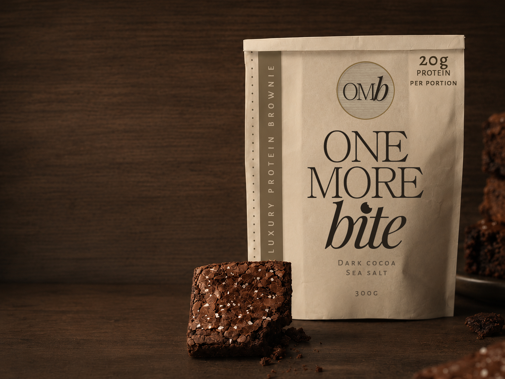
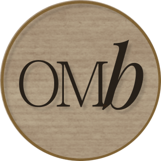
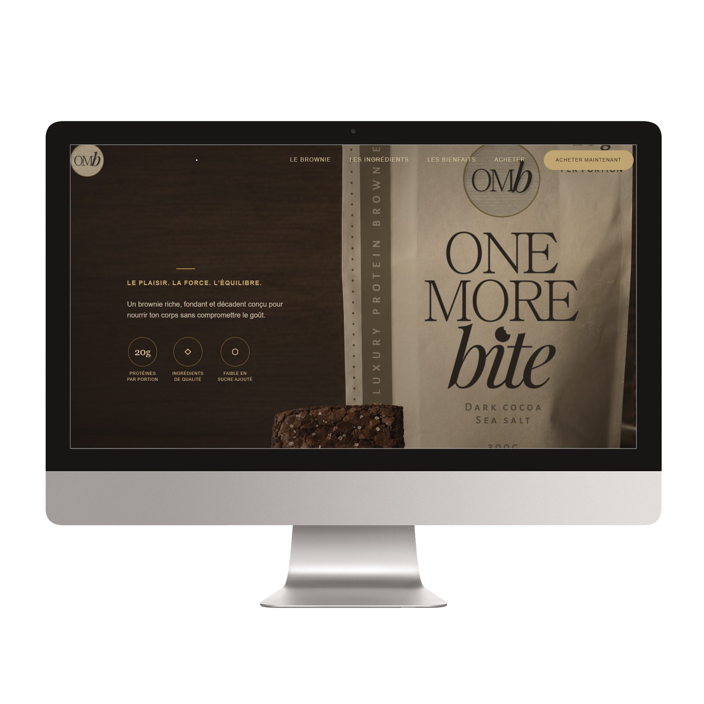
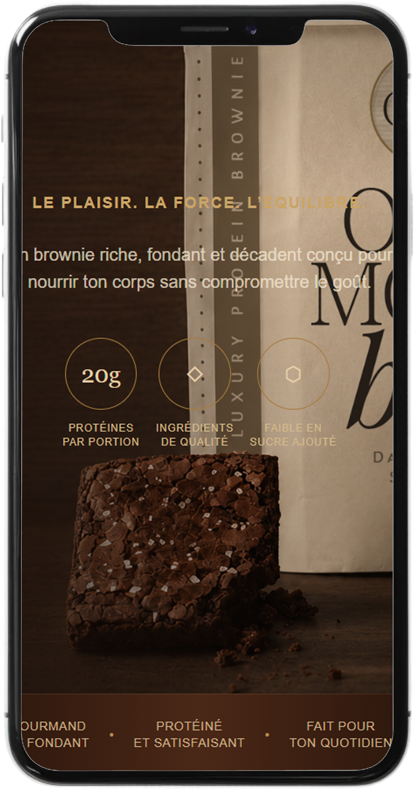

PROJET FICTIF
One More Bite
Brownies protéinés haut de gamme.
One More Bite est une marque fictive de brownies protéinés pensée pour réunir gourmandise, élégance et nutrition. L’identité visuelle s’éloigne volontairement des codes sportifs habituels pour présenter le produit comme une véritable gourmandise haut de gamme. La landing page met l’accent sur les textures, les ingrédients et l’expérience du produit grâce à une direction artistique riche, chaleureuse et immersive.
Visiter le site
Identité visuelle
Logo principal

Palette
#1A100B
#3B2418
#A77B3D
#D5B680
#E8D8BC
Typographie
Cormorant Garamond
The quick brown fox jumps over the lazy dog.
0123456789
Montserrat
The quick brown fox jumps over the lazy dog.
0123456789
La landing page
Le site a été conçu comme une expérience immersive centrée sur un seul produit. Les grandes photographies rapprochées, la palette chocolatée et les détails dorés donnent au brownie une présence luxueuse, tout en présentant clairement ses ingrédients et ses avantages.


L’identité prend vie
L’univers de One More Bite a été décliné dans plusieurs applications afin d’illustrer comment la marque pourrait vivre autant sur son emballage que dans ses communications numériques.